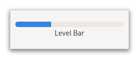

Class
GtkLevelBar
Description [src]
final class Gtk.LevelBar : Gtk.Widget
implements Gtk.Accessible, Gtk.AccessibleRange, Gtk.Buildable, Gtk.ConstraintTarget, Gtk.Orientable {
/* No available fields */
}GtkLevelBar is a widget that can be used as a level indicator.
Typical use cases are displaying the strength of a password, or showing the charge level of a battery.

Use gtk_level_bar_set_value() to set the current value, and
gtk_level_bar_add_offset_value() to set the value offsets at which
the bar will be considered in a different state. GTK will add a few
offsets by default on the level bar: GTK_LEVEL_BAR_OFFSET_LOW,
GTK_LEVEL_BAR_OFFSET_HIGH and GTK_LEVEL_BAR_OFFSET_FULL, with
values 0.25, 0.75 and 1.0 respectively.
Note that it is your responsibility to update preexisting offsets when changing the minimum or maximum value. GTK will simply clamp them to the new range.
Adding a custom offset on the bar
static GtkWidget *
create_level_bar (void)
{
GtkWidget *widget;
GtkLevelBar *bar;
widget = gtk_level_bar_new ();
bar = GTK_LEVEL_BAR (widget);
// This changes the value of the default low offset
gtk_level_bar_add_offset_value (bar,
GTK_LEVEL_BAR_OFFSET_LOW,
0.10);
// This adds a new offset to the bar; the application will
// be able to change its color CSS like this:
//
// levelbar block.my-offset {
// background-color: magenta;
// border-style: solid;
// border-color: black;
// border-width: 1px;
// }
gtk_level_bar_add_offset_value (bar, "my-offset", 0.60);
return widget;
}
The default interval of values is between zero and one, but it’s possible
to modify the interval using gtk_level_bar_set_min_value() and
gtk_level_bar_set_max_value(). The value will be always drawn in
proportion to the admissible interval, i.e. a value of 15 with a specified
interval between 10 and 20 is equivalent to a value of 0.5 with an interval
between 0 and 1. When GTK_LEVEL_BAR_MODE_DISCRETE is used, the bar level
is rendered as a finite number of separated blocks instead of a single one.
The number of blocks that will be rendered is equal to the number of units
specified by the admissible interval.
For instance, to build a bar rendered with five blocks, it’s sufficient to set the minimum value to 0 and the maximum value to 5 after changing the indicator mode to discrete.
GtkLevelBar as GtkBuildable
The GtkLevelBar implementation of the GtkBuildable interface supports a
custom <offsets> element, which can contain any number of <offset> elements,
each of which must have “name” and “value” attributes.
CSS nodes
levelbar[.discrete]
╰── trough
├── block.filled.level-name
┊
├── block.empty
┊
GtkLevelBar has a main CSS node with name levelbar and one of the style
classes .discrete or .continuous and a subnode with name trough. Below the
trough node are a number of nodes with name block and style class .filled
or .empty. In continuous mode, there is exactly one node of each, in discrete
mode, the number of filled and unfilled nodes corresponds to blocks that are
drawn. The block.filled nodes also get a style class .level-name corresponding
to the level for the current value.
In horizontal orientation, the nodes are always arranged from left to right, regardless of text direction.
Accessibility
GtkLevelBar uses the GTK_ACCESSIBLE_ROLE_METER role.
Instance methods
Methods inherited from GtkAccessible (19)
gtk_accessible_announce
Requests the user’s screen reader to announce the given message.
since: 4.14
gtk_accessible_get_accessible_parent
Retrieves the accessible parent for an accessible object.
since: 4.10
gtk_accessible_get_accessible_role
Retrieves the accessible role of an accessible object.
gtk_accessible_get_at_context
Retrieves the accessible implementation for the given GtkAccessible.
since: 4.10
gtk_accessible_get_bounds
Queries the coordinates and dimensions of this accessible.
since: 4.10
gtk_accessible_get_first_accessible_child
Retrieves the first accessible child of an accessible object.
since: 4.10
gtk_accessible_get_next_accessible_sibling
Retrieves the next accessible sibling of an accessible object.
since: 4.10
gtk_accessible_get_platform_state
Query a platform state, such as focus.
since: 4.10
gtk_accessible_reset_property
Resets the accessible property to its default value.
gtk_accessible_reset_relation
Resets the accessible relation to its default value.
gtk_accessible_reset_state
Resets the accessible state to its default value.
gtk_accessible_set_accessible_parent
Sets the parent and sibling of an accessible object.
since: 4.10
gtk_accessible_update_next_accessible_sibling
Updates the next accessible sibling of self.
since: 4.10
gtk_accessible_update_property
Updates a list of accessible properties.
gtk_accessible_update_property_value
Updates an array of accessible properties.
gtk_accessible_update_relation
Updates a list of accessible relations.
gtk_accessible_update_relation_value
Updates an array of accessible relations.
gtk_accessible_update_state
Updates a list of accessible states. See the GtkAccessibleState
documentation for the value types of accessible states.
gtk_accessible_update_state_value
Updates an array of accessible states.
Methods inherited from GtkBuildable (1)
Methods inherited from GtkOrientable (2)
gtk_orientable_get_orientation
Retrieves the orientation of the orientable.
gtk_orientable_set_orientation
Sets the orientation of the orientable.
Properties
Gtk.LevelBar:max-value
Determines the maximum value of the interval that can be displayed by the bar.
Gtk.LevelBar:min-value
Determines the minimum value of the interval that can be displayed by the bar.
Gtk.LevelBar:mode
Determines the way GtkLevelBar interprets the value properties to draw the
level fill area.
Properties inherited from GtkWidget (34)
Gtk.Widget:can-focus
Whether the widget or any of its descendents can accept the input focus.
Gtk.Widget:can-target
Whether the widget can receive pointer events.
Gtk.Widget:css-classes
A list of css classes applied to this widget.
Gtk.Widget:css-name
The name of this widget in the CSS tree.
Gtk.Widget:cursor
The cursor used by widget.
Gtk.Widget:focus-on-click
Whether the widget should grab focus when it is clicked with the mouse.
Gtk.Widget:focusable
Whether this widget itself will accept the input focus.
Gtk.Widget:halign
How to distribute horizontal space if widget gets extra space.
Gtk.Widget:has-default
Whether the widget is the default widget.
Gtk.Widget:has-focus
Whether the widget has the input focus.
Gtk.Widget:has-tooltip
Enables or disables the emission of the ::query-tooltip signal on widget.
Gtk.Widget:height-request
Override for height request of the widget.
Gtk.Widget:hexpand
Whether to expand horizontally.
Gtk.Widget:hexpand-set
Whether to use the hexpand property.
Gtk.Widget:layout-manager
The GtkLayoutManager instance to use to compute the preferred size
of the widget, and allocate its children.
Gtk.Widget:margin-bottom
Margin on bottom side of widget.
Gtk.Widget:margin-end
Margin on end of widget, horizontally.
Gtk.Widget:margin-start
Margin on start of widget, horizontally.
Gtk.Widget:margin-top
Margin on top side of widget.
Gtk.Widget:name
The name of the widget.
Gtk.Widget:opacity
The requested opacity of the widget.
Gtk.Widget:overflow
How content outside the widget’s content area is treated.
Gtk.Widget:parent
The parent widget of this widget.
Gtk.Widget:receives-default
Whether the widget will receive the default action when it is focused.
Gtk.Widget:root
The GtkRoot widget of the widget tree containing this widget.
Gtk.Widget:scale-factor
The scale factor of the widget.
Gtk.Widget:sensitive
Whether the widget responds to input.
Gtk.Widget:tooltip-markup
Sets the text of tooltip to be the given string, which is marked up with Pango markup.
Gtk.Widget:tooltip-text
Sets the text of tooltip to be the given string.
Gtk.Widget:valign
How to distribute vertical space if widget gets extra space.
Gtk.Widget:vexpand
Whether to expand vertically.
Gtk.Widget:vexpand-set
Whether to use the vexpand property.
Gtk.Widget:visible
Whether the widget is visible.
Gtk.Widget:width-request
Override for width request of the widget.
Properties inherited from GtkAccessible (1)
Properties inherited from GtkOrientable (1)
Signals
Signals inherited from GtkWidget (13)
GtkWidget::destroy
Signals that all holders of a reference to the widget should release the reference that they hold.
GtkWidget::direction-changed
Emitted when the text direction of a widget changes.
GtkWidget::hide
Emitted when widget is hidden.
GtkWidget::keynav-failed
Emitted if keyboard navigation fails.
GtkWidget::map
Emitted when widget is going to be mapped.
GtkWidget::mnemonic-activate
Emitted when a widget is activated via a mnemonic.
GtkWidget::move-focus
Emitted when the focus is moved.
GtkWidget::query-tooltip
Emitted when the widget’s tooltip is about to be shown.
GtkWidget::realize
Emitted when widget is associated with a GdkSurface.
GtkWidget::show
Emitted when widget is shown.
GtkWidget::state-flags-changed
Emitted when the widget state changes.
GtkWidget::unmap
Emitted when widget is going to be unmapped.
GtkWidget::unrealize
Emitted when the GdkSurface associated with widget is destroyed.
Signals inherited from GObject (1)
GObject::notify
The notify signal is emitted on an object when one of its properties has its value set through g_object_set_property(), g_object_set(), et al.